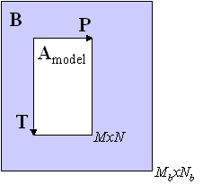
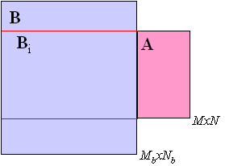

Alignmat
Purpose
Alignment of matrices and N-way arrays
Synopsis
- [bi,itst] = alignmat(amodel,b);
- [bi,itst] = alignmat(a,b,ncomp);
Description
In some cases, data arrays require alignment to aid the performance of the three-way (e.g. GRAM, or PARAFAC) or unfold models such as MPCA. For example, sometimes GC peaks or data from batch operations can be shifted on a sample-to-sample basis (each sample is a Mb by N matrix). In these cases, it is advantageous to choose a sub-matrix of a single matrix A as a standard and find the sub-matrix of subsequent samples B that best align or match the standard matrix. It is also possible to use a model of one or more standard matrices Amodel and find the sub-matrix of subsequent samples B that best align or match the model. In the latter case, it is also possible to find the sub-array of B that best aligns with the model of a N-way data set (Amodel). This can be performed along multiple modes using ALIGNMAT.
ALIGNMAT finds the subarray of input (b), (bi), that most matches a using two different algorithms. For input:
[bi,itst] = alignmat(amodel,b);
the sub-array (bi) is found using a projection method. In this case, (bi) is the sub-array of (b) that has the lowest residuals on a model of (a) called (amodel). Models for (amodel) are standard model structures from PCA, PCR, GRAM, TLD, or PARAFAC. Input (b) can be class "double" or "dataset" and must have the same number of modes/dimensions as (a) with each element of size(b) size(a). Alignment is performed for modes with size(b) > size(a).

For input:
[bi,itst] = alignmat(a,b,ncomp);
both (a) and (b) can be class "double" or "dataset", but both are two-way arrays (matrices). For (a) M by N then (b) must be Mb by N where Mb M (when Mb = M no alignment is performed). The output (bi) is the sub-array of (b) that best matches the matrix (a). Optional input (ncomp) is a scalar of the number of components to use in the decomposition {default: ncomp = 1}.
Output (bi) is an array of class "double", (itst) is a cell array containing the indices of (b) that match (bi). Note that since interpolation is used the indices in (itst) are not in general integers.
Algorithm
For the projection method, Amodel is a model of array A. This can be a model from PCA, GRAM, TLD, or PARAFAC. For example, if A is a M by N matrix then the PCA model of A is where T is M by K and P is N by K. Alignmat finds the submatrix of B, Bi, that has the lowest residuals on the model of A i.e., . This can be used to find the data "cube" within N-way arrays.
![{\displaystyle \mathbf {B} _{i}=\min \left(\sum \limits _{n=k}^{N+k}{\sum \limits _{m=j}^{M+j}{\left[\mathbf {B} _{k,j}\left(\mathbf {I} -\mathbf {PP} ^{T}\right)\right]^{2}}}\right)}](https://wikimedia.org/api/rest_v1/media/math/render/svg/b4a410664baaa0d4dbb0a8455888e8b1832bf1ec)
 
In the left figure, this is represented as having each of the M by N sub-matrices of B projected onto the model of the M by N model of A. Note that in the figure that the size of B is Mb by Nb with Mb>M and Nb>N.
The projection method was presented in Gallagher, N.B. and Wise, B.M., "Standardization for Three-Way Analysis", TRICAP 2000: Three-way Methods in Chemistry and Psychology, Hvedholm Castle, Faaborg, Denmark, July (2000). In that study, it was found that the projection method was faster and more robust than the SVD-based algorithm discussed below.
In the SVD method, the standard matrix A and a sub-matrix of B, Bi, are aumented and a singular value decomposition of the result is performed such that [u,s,v] = svd([AMxN|Bi,MxNb]) (right figure). The sub-matrix is incremented and the SVD is performed again. The sub-matrix that minimizes the rank is selected as matching best. The objective function is . Note that in this algorithm N and Nb do not have to be equal. The algorithm is discussed in Prazen, et al., Anal. Chem., 70, 218-225, 1998.

See Also
alignpeaks, alignspectra, analysis, caltransfer, gram, matchrows, parafac, pca, registerspec, tld